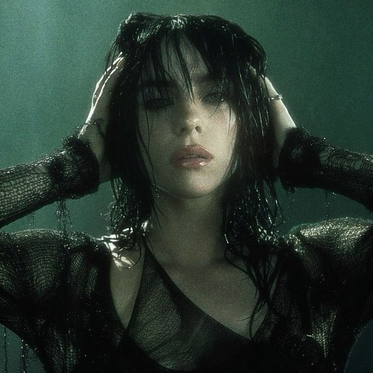
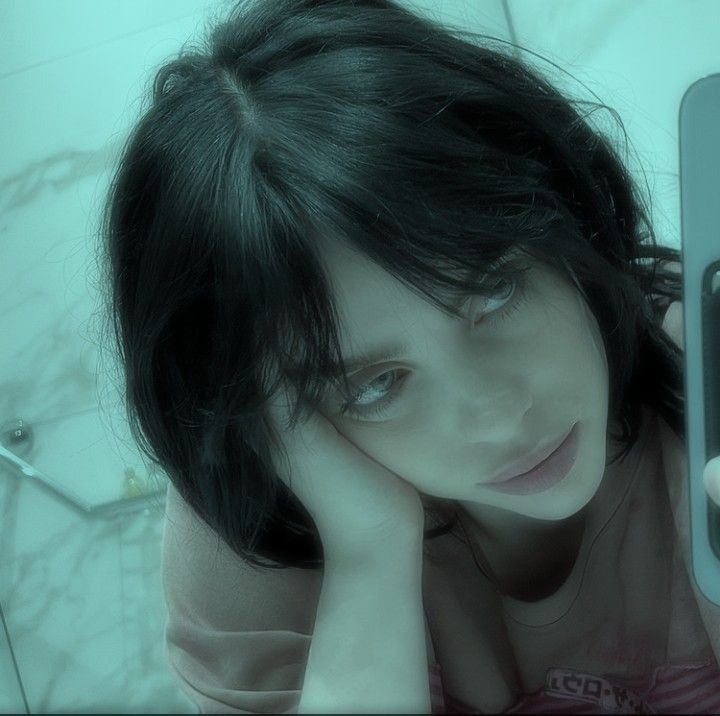
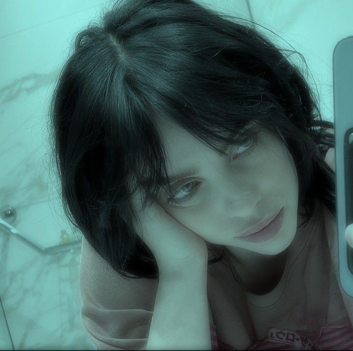

 

Sobre Billie Eilish
Billie Eilish é uma cantora e compositora estadunidense. Ganhou popularidade em 2016,
quando lançou o single de estreia Ocean Eyes, a canção foi escrita e produzida por seu irmão Finneas O'Connell,
com quem ela colabora em músicas e shows ao vivo. Eilish é mais conhecida por seu single "Bad Guy", de 2019,
que atingiu o topo da Billboard Hot 100.
Seu primeiro extended play, Don't Smile at Me (2017), alcançou o top 10 nos Estados Unidos.
Eilish colaborou com o cantor estadunidense Khalid para o single "Lovely",
lançado em abril de 2018 e adicionado à trilha sonora da segunda temporada de 13 Reasons Why.[2] Seu álbum de estreia,
When We All Fall Asleep, Where Do We Go? (2019), estreou no topo da Billboard 200 e alcançou o número um no Reino Unido,
Canadá e Austrália. O álbum obteve quatro singles no top 40 da Billboard Hot 100: "When the Party's Over", "Bury a Friend",
"Wish You Were Gay" e "Bad Guy", o último dos quais se tornou seu primeiro single número um nos Estados Unidos.
Eilish tem oito singles de ouro e quatro de platina em solo estadunidense.
Seus prêmios incluem nove Grammy Awards, dois American Music Awards, dezesseis Guinness World Records,
três MTV Video Music Awards e dois Academy Awards. Na 62ª Edição do Grammy,
foi a pessoa mais jovem e a segunda mulher a vencer na história as quatro principais categorias do Grammy
(Gravação do Ano, Álbum do Ano, Canção do Ano e Melhor Revelação). Ela foi já foi indicada no total para 25 Grammy Awards.
Foi eleita uma das "100 mulheres mais inspiradoras e influentes do mundo em 2022" pela BBC.